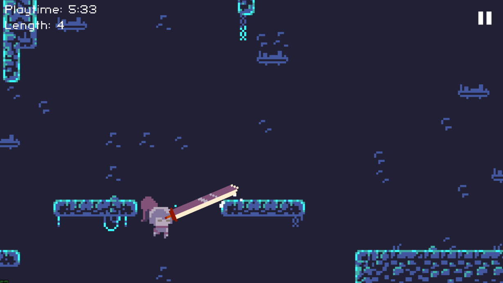
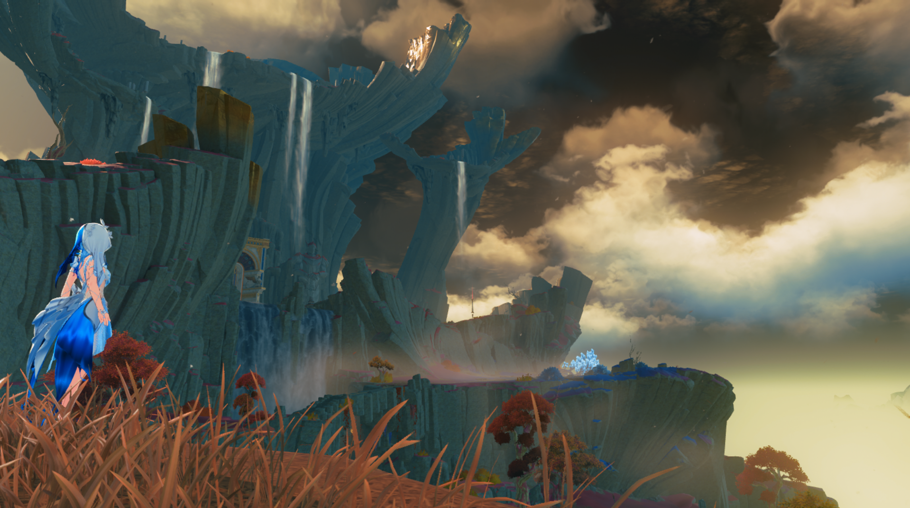
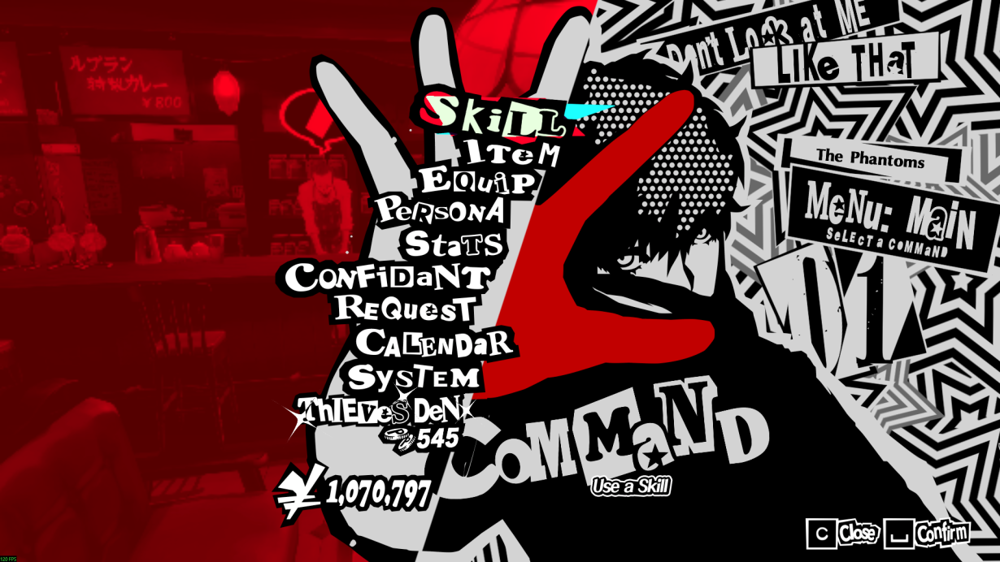
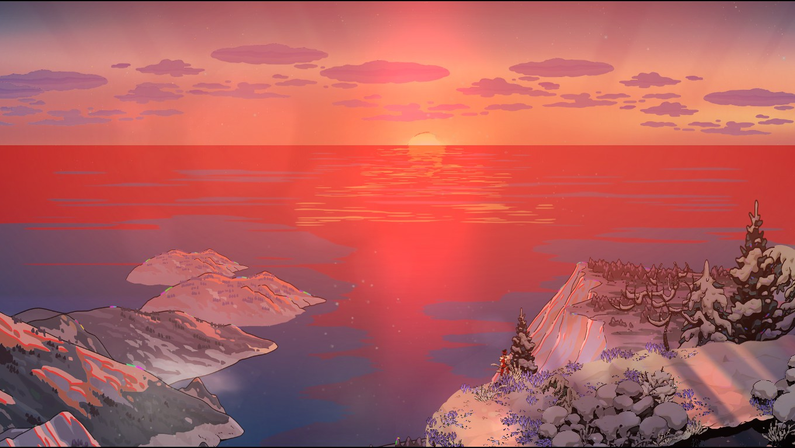
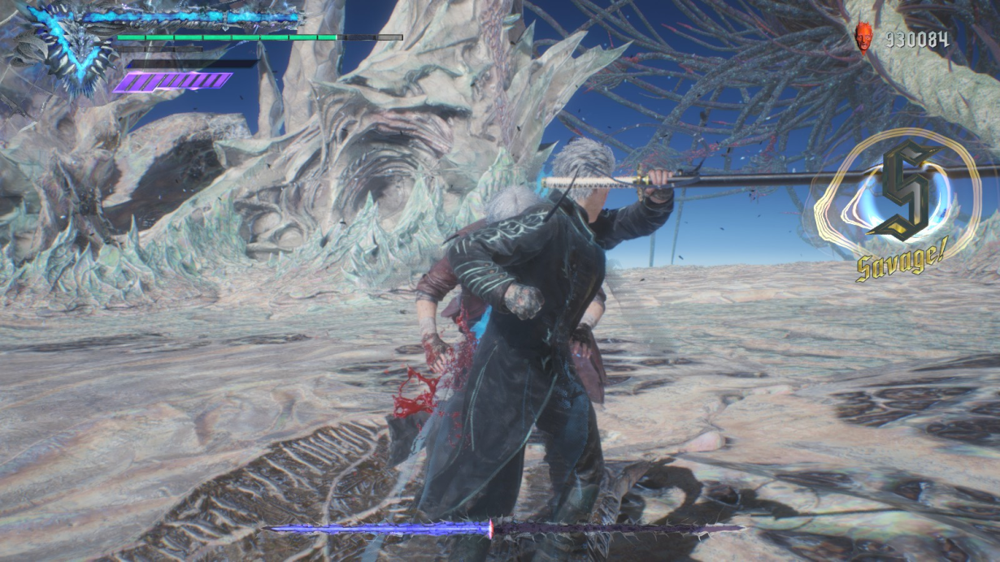
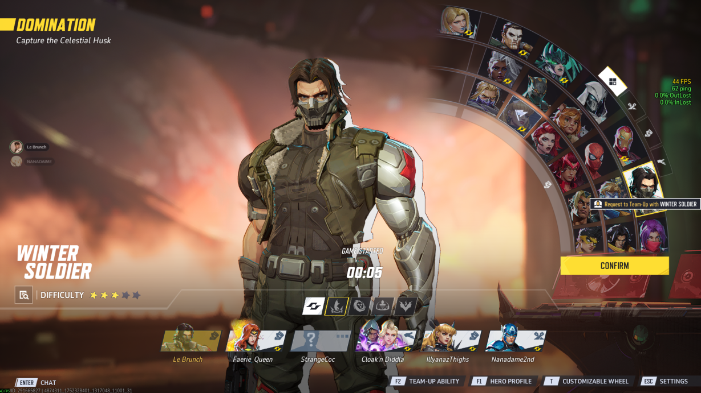

Risk of Rain 2 excels in its mechanics by expertly balancing simplicity and depth. At first glance, it’s a fast-paced roguelike shooter, but beneath the surface lies a complex system of item synergies and scaling difficulty that continuously reshapes how players approach each run. The randomized item drops create a dynamic flow where every choice matters, encouraging experimentation and adaptation. This ever-evolving gameplay loop rewards skill and strategy, making the core mechanics feel fresh and engaging even after countless playthroughs. It’s a masterclass in how layered, well-designed mechanics can keep players hooked through unpredictability and meaningful progression.
Deepest Sword

Though somewhat niche, Deepest Sword is still worth a second look. You’d be forgiven for thinking that this is a simple joke game, and it is, but it still has good game design. Looking at its gameplay, though the player is given a sword, they’re not encouraged to swing it as one would in action games. Instead, the gameplay is closer to puzzle games as well as “rage games” like Bennet Foddy’s Getting Over It. It challenges the player not in reaction time or how fast they can press buttons but instead encourages the player to think smart and carefully. It’s not in the size of the sword, but in how you use it.
Wuthering Waves

Wuthering Waves offers an open world that doesn’t just sprawl outward, but upward—and that’s where its level design shines. With wall-running, gliding, grappling, and even mid-air combat, traversal feels more like a toolbox than a means to an end. Every mountain, building, and ruin feels intentionally placed to test your movement skills or invite exploration. Unlike many open-world games that rely on vastness alone, WuWa’s environments reward creative navigation, making movement itself a design challenge. It’s not just about where you go, but how you get there—and that’s what makes its level design stand out.
Persona 5

Persona 5 is a marvel in various aspects of game design, though most notably in its menus. The pause menu, pictured above screams out to you with its bright red background on one side, standing in stark contrast to the black and white text. This contrast creates visual interest while also drawing the player’s eyes onto the text, which are the options for the menu. Not only that, but the iconic and flashy art style also screams for the player’s attention, keeping them engaged and unable to draw their eyes away. This trend of contrast while keeping a consistent, striking art style is shared among all menus, giving the game a more memorable look, even in its battle UI.
Hades

Hades takes the roguelike loop—die, restart, repeat—and turns it into a storytelling engine. Instead of static cutscenes or linear arcs, the narrative unfolds dynamically with each run, adapting to your successes, failures, and relationships. Every conversation, character, and reveal is context-aware, making the story feel reactive and alive. Zagreus’s journey isn’t told to the player—it’s built with them. Even repeated deaths become part of the narrative rhythm, driving character growth and deepening emotional connections. Hades proves that narrative design isn’t just about what’s said, but when, why, and how it’s delivered.
Devil May Cry 5

Devil May Cry 5 has gained quite the following since its release. One of the highly praised parts of this game is its impeccable music, with fan favorites being Bury the Light and Devil Trigger, both written by Casey Edwards. The tracks themselves are incredible, but what earned the game a spot is its integration of music with mechanics. The better the player is doing, the more that the music intensifies—starting from instrumentals to a chorus with hype vocals. This blending of music to gameplay makes the music part of a player’s high points in their experience, leading to them linking that track to a good time and vice versa.
Marvel Rivals

Marvel Rivals truly captures what it means to feel like a superhero in a fighting game. The responsive controls, impactful animations, and distinctive sound design combine to create a visceral experience where every punch, power-up, and special move lands with satisfying weight. Characters like Spider-Man swing and leap with fluidity, perfectly nailing his acrobatic style, while Daredevil’s swift, precise movements embody his agility and fighting finesse. Each hero feels unique not just visually, but in how their abilities play out, making every battle feel dynamic and personal. It’s this immersive feedback loop that elevates Marvel Rivals beyond just button-mashing to an experience where you become the hero on screen.